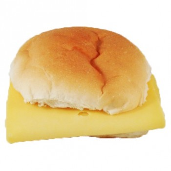

Broodje kaas
met Indy
Ingredienten broodje kaas
• 60 g 30+ belegen kaas, in plakken
• 4 sneetjes volkorenbrood
• 16 plakjes komkommer
• 20 g margarine
Ingredienten broodje kaas
- Pak de ingredienten
- Maak het broodje lekker warm door hem 5 min te bakken in een pan
- Smeer de 20g margarine op het warme broodje
- Doe de 30+ belegen kaas op het warme broodje
